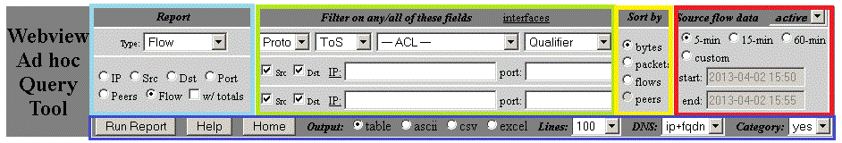

Webview Ad-Hoc Query Tool
This tool allows ad hoc querying of NetFlow data stored on the Webview server,
with the results returned in a variety of report formats.
The main panel is divided into five sections, color-coded below:

note: this panel often changes and may not look exactly like your webview installation
Date/time Selection (red, upper-right)
This area lets you quickly select the last 5/15/60 minutes of flow data, or you can
choose custom start/stop times using a popup calendar. When you click into a graph, the times are set for you.
The range of time determines how many raw flow files are processed for the report. If you select a very large time frame,
the reports may take a very long time to complete.
There is also a pull-down to select alternate flow sources (if they exist). The default is to look at "active" flows.
Report choice (cyan, upper-left)
By working with the Report Type pull-down and the various radio buttons, the following reports are available
- Type: Raw - a simple chronological dump of raw flow data. By default, this includes IP addresses, port, protocol, DSCP, TCP flags, start time, duration, and the packet/byte counters.
- Exporters and interfaces - adds fields showing the exporter and its SNMP interface descriptions
- Routing - adds nexthop field and routing prefix length
- ASN - adds BGP ASN fields.
- Type: Connection - passes the flow data through a TCP/UDP connection engine that attempts to stitch the flow data back into a bidirectional connection, with the client and server identified.
- Simple - the basic report displays the client and server IP/port numbers, duration, client-to-server (c2s) and server-to-client (s2c) byte and packet counters.
- Multihop - the multihop report displays each connection as it is seen by multiple netflow collection points. For example, if a TCP flow goes across a data center router and a branch office router, this will show the connection from both perspectives. This is very handy when looking for packet loss or QoS mismarking.
- Type: Flow - this is the standard flow reporting engine.
- IP - keys off of every IP (source or destination)
- Src - keys off the source IP -- this enables the peers counter which shows how many destination IP's each source is sending packets to.
- Dst - keys off the destination IP -- this enables the peers counter which shows how many source IP's are sending packets to the destination.
- Port - keys off the source/destination port number.
- Peers - keys off each source & destination IP pair
- Flows - keys off each 5-tuple - protocol and source/destination IP&port
- w/totals - this checkbox will display totals for the entire range, even if only the "top 100" or so items are shown.
- Type: Other - miscellaneous reports
- Exporters - shows a list of all exporters and the volume of flow data received from each, after applying any of your filters. This also identifies one-way interfaces, which can be useful to identify misconfigured netflow. Note that the exporters report from the webview home page shows more details of a sysadmin nature, but does not have any filtering ability.
- BGP ASN - generates a flow report by autonomous system numbers (ASN), which aren't often enabled in netflow collection.
The report type pull-down selects from may include:
- Raw Flows displays raw flow data (src/dst IP/port, bytes,
packets). When selected, another menu will appear letting you choose
the raw flow fields to display.
- simple -- start, duration, IPs, ports, protocol, and counts of packets/bytes
- detail -- adds TCP flags and DSCP/ToS values (default)
- full -- adds exporter and interface information
- complete -- adds nexthop, ASN and route mask information
- src IP and dst IP produces a topN report
by source/destination IP addresses. These reports can be sorted by
peers.
- Port produces a topN report of TCP/UDP port numbers.
- Peers produces a topN report of
source/destination IP address pairs.
- Flows produces a topN report of source/destination IP
address/protocol/port number pairs.
- ASNs produces a topN report of ASNs (not available by default).
Sorting Reports (yellow, top)
Raw reports cannot be sorted. They always appear in the order that they
are found in the raw flow files (roughly chronological).
Other reports can be sorted by bytes, packets, or flows.
Reports on src IP or dst IP can also be sorted by
peers, a count of the unique peer IP addresses seen. This
is a good indicator of how chatty an IP is, and is great for spotting
worms and port-scanning behavior.
Filtering data (green, top)
All reports are subjected to packet filtering rules composed of one or
more of the following:
Output Formatting (blue, bottom)
There are several outputs for controlling the output formatting:
Important Notes
- Reports can be CPU intensive and take a long time to generate,
especially if many files are selected. Be patient.
- With most reports, duplicate flows are not filtered by this tool. If a flow crosses multiple
routers with NetFlow export enabled, the flow will be tabulated once
for each router. To avoid this, restrict your reports to a specific
exporter interface (e.g., by clicking on a graph to get into the ad hoc query tool).
The except is the connection report, which has a multihop option which displays the same flow across multiple points across the network.